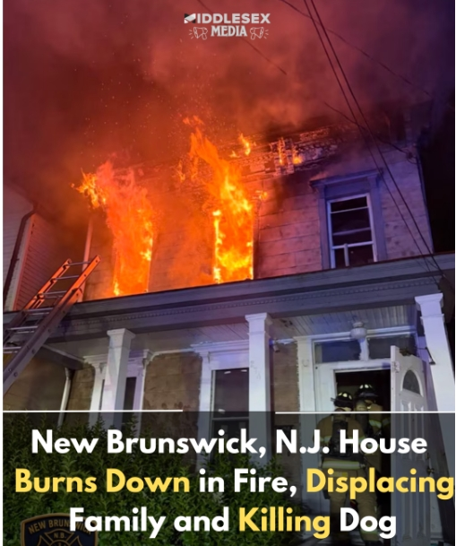

New Brunswick, N.J. House Burns Down in Fire, Displacing Family and Killing Dog

NEW BRUNSWICK, N.J. — At around 2:20 am on the 200 block of Somerset Street, a severe fire broke out on the second floor of a house in New Brunswick.
While no residents were injured, a dog was killed in the process.
The New Brunwick Police Department reported that the fire had began upstairs and quickly spread throughout the house. Most of the damage was done to the second floor.